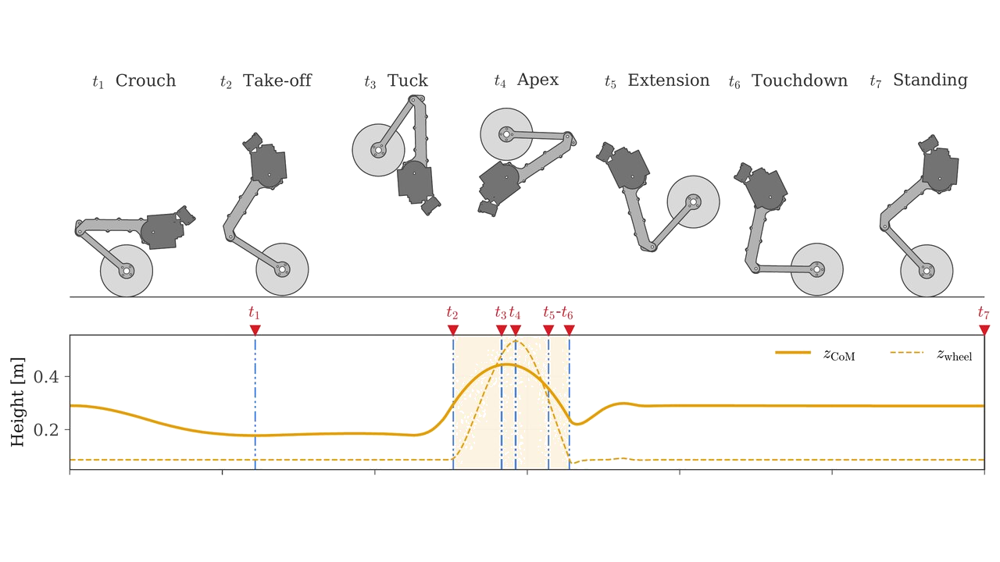
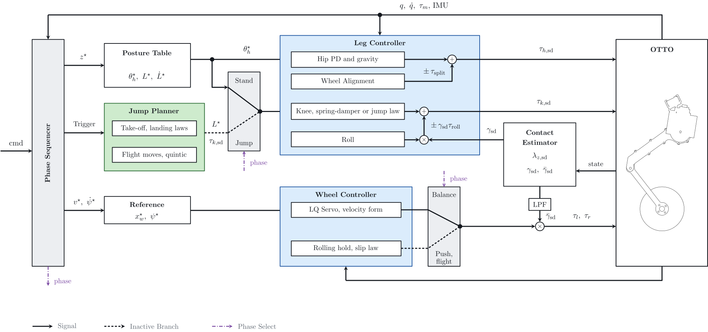
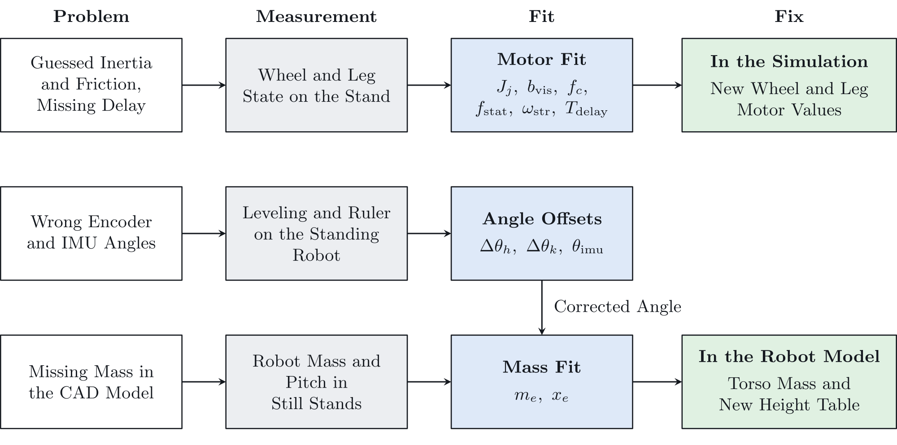
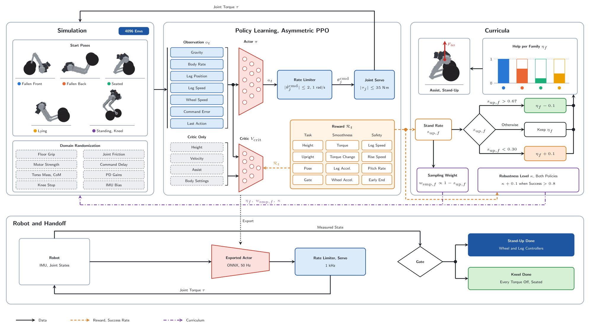

Overview
OTTO is a wheeled bipedal robot built at the Institute of Field Robotics (FIBO). It rolls on two wheels like a balancing robot and uses its two-joint legs to change height and leave the ground.
This project covers its dynamics and control, split into four topics: the somersault, the baseline controllers with the jump, the real-to-sim identification and the reinforcement learning policies. It is my bachelor thesis, with Dr. Kitti Thamrongaphichartkul and Assoc. Prof. Dr. Supachai Vongbunyong as advisors. Earlier student teams at FIBO studied the robot before me, and the somersault paper is submitted to IEEE ICRA 2027.
Hardware
| Body | Torso with two legs, 4 leg joints and 2 driven wheels, 10.55 kg |
|---|---|
| Hip and Knee | MyActuator RMD-X6-P20-60, \(60\ \mathrm{N\cdot m}\) peak |
| Wheel | ODrive BotWheel direct-drive hub, \(14.27\ \mathrm{N\cdot m}\) peak |
| Bus | CAN, 48 V |
| Sensors | WitMotion HWT906 for roll and pitch, HWT101CT for yaw, both at 1000 Hz |
System
| Control Rate | 1000 Hz for the controllers, run as ros2_control plugins |
|---|---|
| Software | ROS 2 Jazzy, ros2_control, MuJoCo, CasADi, Pinocchio, acados |
Publications
| Year | Venue | Paper | Status |
|---|---|---|---|
| 2026 | IEEE ICRA | OTTO: Dynamics and Control of Wheeled Bipedal Jumping Robot P. Buasakorn, S. Vongbunyong, K. Thamrongaphichartkul pp. 2489 to 2496, DOI 10.1109/ICRA57385.2026.11696480 | Accepted |
| 2027 | IEEE ICRA | OTTO: Dynamics and Control of Wheeled Bipedal Somersaulting Robot P. Boonchanachai, S. Vongbunyong, D. Campolo, K. Thamrongaphichartkul | Under Review |
Topics

Somersault
A full forward somersault planned as one optimization and tracked with NMPC in simulation

Baseline Controllers
Balancing, driving, height, roll leveling and the jump on the physical robot

Real-to-Sim
Identifying the motors, mass and sensor offsets so the simulation behaves like the robot

Reinforcement Learning
Stand-up and kneel policies trained around an identified model of the robot